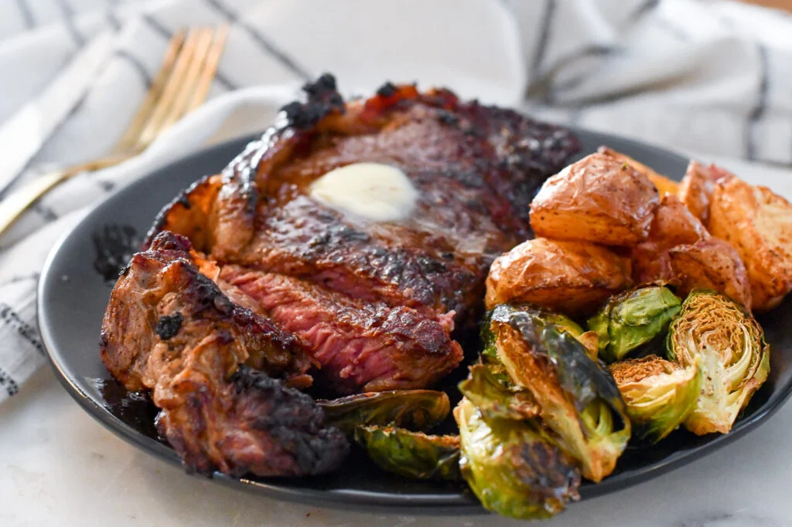

Gordon Ramsay Perfect Steak

Description
Gordon Says: If you follow these simple rules, it's going to be easy.
Let the pan get nice and hot. If there's no heat inside the pan, there's no
color. If there's no color, there's no flavor. Make sure the steak is
relaxed, meaning it's at room temperature. A relaxed steak will cook quicker, and
won't be stone cold inside the center.
Ingredients
- Ribeye (or really any cut of steak)
- Large grain sea salt
- Ground pepper
- 1-2 Tbsp olive oil
- Fresh garlic slight crushed
- Fresh thyme
- 2 Tbsp butter
Steps
- Make sure your steaks are completely thawed. Remove them from the fridge and allow
them to sit outside fridge for AT LEAST 20 minutes.
- Put a pan over medium-high heat. Season thawed steaks with a good amount of large
grain salt (sea salt) and ground pepper, rub bottom of steaks with excess salt and
pepper that has fallen onto table.
- Once pan begins to smoke drop 1-2 Tbsp of olive oil in and coat pan in it. Lay steaks
away from you into pan and let sear for one minute on each side. There should be three
sides you sear (top, bottom, and fat side). Render the fat throughout all the cooking.
Note: to render fat, tilt pan up and and lean steaks against far edge of pan as
you see below.
- Crush some fresh garlic, pinch off some fresh thyme, grab another Tbsp of olive oil
and add it to pan around steaks while continuing to turn the steaks every minute.
- Add 2 Tbsp of butter to hot pan and baste the steaks by scooping melted butter on top
of the cooking steaks.
Pro Tip: Gordon tells you to check tenderness by equating the tenderness of your
palm to rare, top of the wrist as medium, and just below that as well done. It is
difficult for me to use that method, so I use cheek as rare, chin as medium, and
forehead as well done.
- Continue basting and turning steaks on the minute until steak is at desired tenderness!
Brush steaks with garlic. Remove from heat and place on cutting board and let rest
5-10 minutes, serve and enjoy the ultimate Gordon Ramsay Perfect
Steak!
Source